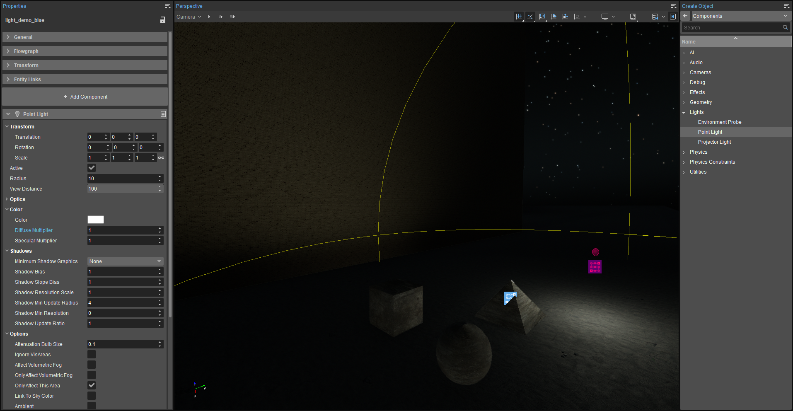
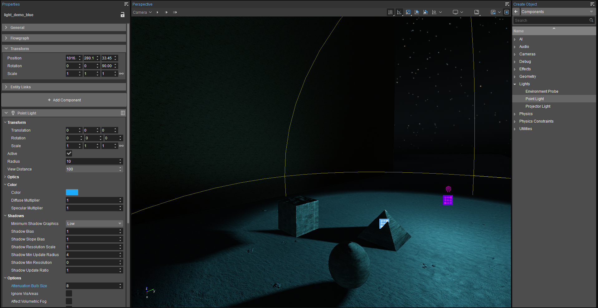
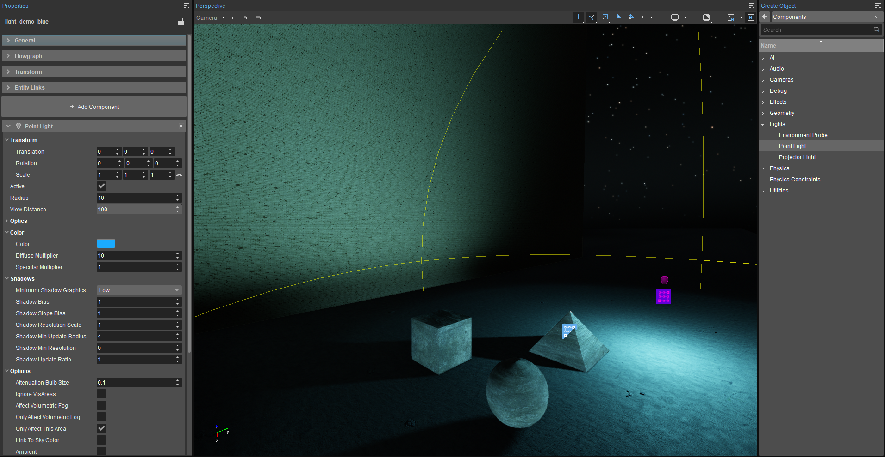
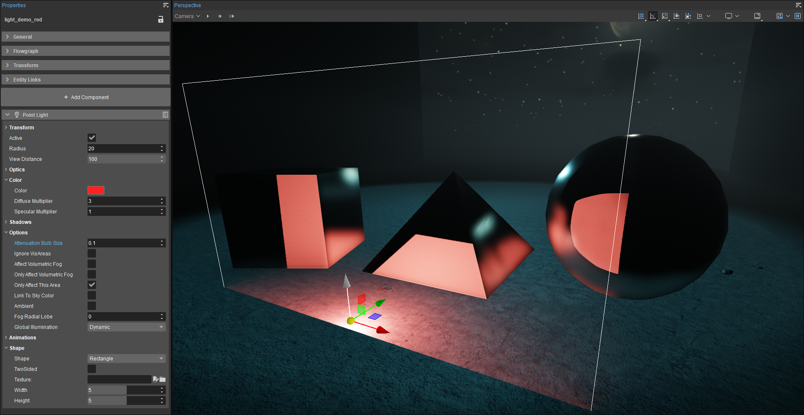
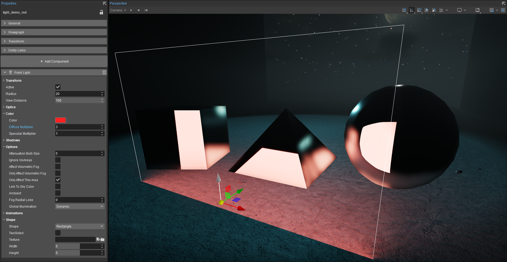
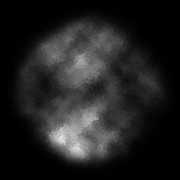
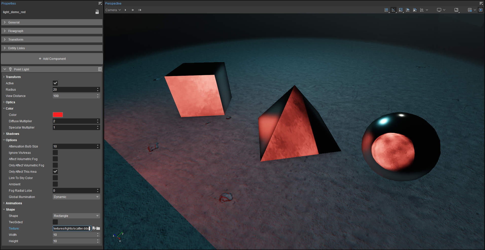

Введение
В этом уроке основное внимание уделяется компоненту Point Light, и он служит введением в его использование и некоторые его функции. Компонент точечного света излучает свет во всех направлениях от сущности, и в реальном мире его можно сравнить с лампочкой.
Прежде чем приступить к изучению этого руководства, мы рекомендуем вам прочитать Компоненты сущностей (из версии движка 5.6) документация. Это даст вам гораздо лучшее понимание концепций, лежащих в основе Entity-компонентов CRYENGINE, кроме того, документацию можно использовать в качестве справочного руководства по различным атрибутам/параметрам, которые относятся к каждому из доступных компонентов.
Для создания новой сущности можно использовать разные методы. Для получения дополнительной информации см. Создание сущности документация.
Создание точечного света
Прежде чем приступить к созданию света, используйте Environment Editor, чтобы изменить время дня на ночь, чтобы солнце не мешало освещению. Пока ты можешь добавить световой компонент в существующий объект (например, видимая сетка, представляющая лампочку или светильник), его также можно добавить как компонент, независимый от какого-либо объекта. В этом случае сам компонент света невидим для игрока; виден только его эффект:
- Откройте Создать объект инструмент
Нажмите на Компоненты и откройте Свет папка, чтобы показать Точечный свет.
Вы можете либо перетащить компонент на уровень, или double-нажмите компонент, в который помещается мышь Создать объект режим.
Поворот светового компонента будет щелкнуть к ландшафту или любой сетчатой поверхности, на которую вы нажимаете, захватывая большую часть света под ландшафтом. Используйте Переместить штуковина, чтобы переместить ее вверх в воздух.

Добавление точечного источника света на уровень
Настройка свойств основного света
Следующее, что вам обычно захочется изменить, — это яркость света. В типичных случаях использования это лучше всего достигается с помощью Цвет -> Диффузный множитель собственность. Значение по умолчанию: 1; желаемое значение будет зависеть от расстояния между вашим световым компонентом и объектами и/или местностью, которую вы хотите осветить.
Вы также можете управлять яркостью зеркальных бликов независимо, используя Цвет -> Множитель зеркального блеска. Например, спроецируйте свет на сферу, чтобы увидеть зеркальное отражение источника света на шаре. Установить Зеркальный множитель чтобы 0 и изюминка исчезает полностью. Увеличьте его, и выделение станет ярче и увеличится. Однако мы рекомендуем оставить этот параметр по умолчанию ценность 1 производить физически точный зеркальные отражения и использование Diffuse Multiplier для управления яркостью.
Активный свойство просто включает и выключает ваш световой компонент; это особенно полезно для управления с помощью визуальных сценариев или кода во время игры в ответ на состояния игры, выключатели света, триггеры и т. д.
Цвет -> Цвет это просто цвет света.
Включение теней
По умолчанию легкие компоненты нет отбрасывать тени; вы можете включить их, установив Тени -> Минимальная графика теней установка на что-то кроме Нет. Помните, что это не настройка качества, а определяет, в каких пределах Спецификация тени системы заслоняющий объект будет отбрасывать тень. Для отдельных объектов должны быть включены тени и установлен равный или меньший параметр «Минимальная графика теней» для источника света, чтобы отбрасывать тень от этого источника света. Отбрасывание теней требует больших вычислительных затрат, поэтому всегда будет необходимо выборочно использовать отбрасывающие тени источники света.
Важно понимать, что попросить точечный свет отбрасывать тени гораздо дороже, чем свет проектора — в шесть раз дороже, потому что он излучает во всех направлениях. Даже если угол света проектора установлен на максимальный угол 180°, он все равно будет в шесть раз менее вычислительно затратным, чем точечный источник света. Хотя вы можете подумать, что можно просто поместить точечный источник света на поверхность так, чтобы он мог излучать только под углом 180°, точечный источник света не знает о существовании этой поверхности и продолжает проецировать свет под углом 360°, предполагая, что любые объекты на его пути должны будут рассчитывать тени на основе его луча (по крайней мере, для объектов, для которых тени включены).
Контроль спада
Диапазон — максимальное расстояние (в метрах), на которое может проникнуть свет. Чтобы имитировать свет в реальном мире, свет «падает» (уменьшается яркость). экспоненциально с расстоянием от источника света (где Яркость = 1/Расстояние2). Однако есть еще два фактора, которые повлияют на это:
- Падение только начинается снаружи радиус «лампочки» virtual, который задается Параметры -> Размер лампы ослабления параметр. Опять же, это расстояние в метрах, которое представляет собой радиус из «лампочки». В пределах этого радиуса интенсивность света равна 100%. Радиус по умолчанию составляет 0,1 м, что подходит для большинства «лампочек» virtual.
- Чтобы избежать проблемы, заключающейся в том, что свет в реальном мире никогда не достигает нуля (и чтобы избежать траты ресурсов на вычисление бесконечно малых, невидимых изменений яркости), CRYENGINE свет падает в соответствии с общепринятой формулой: пока они достигают 80% их радиуса. Начиная с 80% они начинают отваливаться линейно пока их не заставят ноль яркость при 100% диапазона.
Понимание размера лампы ослабления
Опции > Размер лампы затухания свойство задает радиус, в пределах которого будет находиться его яркость 100% (как установлено диффузным множителем). Другими словами, спад не начнется до тех пор, пока снаружи этот радиус.
Изменение размера лампы ослабления. Яркость в пределах размера лампы ослабления 8 м полностью однородна, с последующим быстрым спадом от 8 м до 10 м предела света, установленного свойством радиуса.
 
Изменение цвета и интенсивности света. Вы также можете увидеть снижение интенсивности в радиусе 10 м.
Анимация цвета и яркости света
Помимо управления цветом света, яркостью и другими параметрами с помощью игрового кода и визуальных сценариев, яркость и цвет компонентов освещения также можно изменять с течением времени с помощью стиля > Анимации собственность. Имеется множество заранее запрограммированных анимаций, включая пульсацию с различной скоростью, мерцание и изменение цвета. Некоторые из них, например, имитируют мерцающий свет огня. Атрибут «Скорость» изменит скорость воспроизведения анимации. Например, стили освещения № 36 и 39 хорошо подходят для имитации мерцающего огня; 36 в большей степени изменяет яркость света.
Если вы хотите настроить собственную анимацию, вы можете анимировать их свойства, используя Track Viewили извлеките и отредактируйте Шейдеры\HWScripts\CryFX\Light.cfx шейдер из Двигатель\shaders.pak файл в engine\shaders.pak\Shaders\HWScripts\CryFX папка в папке вашего проекта.
Более подробную информацию о шейдерах можно получить в технической документации. здесь. Вы также можете просмотреть видеоурок по изменению шейдеров на нашем канале YouTube. здесь.
Настройка зонального освещения
Начиная с версии CRYENGINE 5.6, точечные источники света могут функционировать как площадные огни - свет, исходящий от большой плоской поверхности. Они могут быть как прямоугольными, так и эллипсоидными. Это имитирует то, что происходит, когда реальный источник света либо отражается от большой белой поверхности, либо проецируется через большой лист полупрозрачного белого материала. В любом случае вся поверхность фактически становится источником света.
В реальной жизни лучи света, проходящие через большую поверхность или отражающиеся от нее, также считаются разбросанный во многих направлениях, создавая тени, каждая из которых находится в немного разных местах. Вместе эти многочисленные тени выглядят как мягкий край тень. Однако плафоны освещения в двигателе нет создавать мягкие тени. Фактически, тени вообще нельзя использовать с площадным освещением. Это соответствует обычному использованию мягкого света в качестве заполняющего света, который не должен отбрасывать вторую тень в реальном фотографическом или кинематографическом освещении. Они дополняют основной источник света, но при этом кажутся «невидимыми» или бесцельными. Несмотря на это, уличные светильники имеют множество практических применений, дополняя освещение и создавая красивые, реалистичные отражения, как будто от большого источника.
Чтобы включить точечный источник света в качестве зонального, перейдите к Форма свойства и измените свойство Shape на любое Прямоугольник или Диск. Установите желаемую ширину и высоту освещения вашей зоны максимум до 10 м. Если помощники включены, вы увидите свет области, представленный белым контуром вокруг точечного источника света. Помните, что вы должен установите «Тени» > «Минимальная графика теней» на Нет чтобы изменить компонент с точечного источника света на точечный источник света.
Однако если вы переместите локальный источник света близко к поверхности с настройкой «Размер лампы затухания» по умолчанию, равной 0,1, и присмотритесь, вы заметите, что свет все еще исходит и экспоненциально падает из центральной точки компонента точечного освещения. Другими словами, это даже не по всей ширине и высоте площадного освещения (в данном случае прямоугольник 5x5 м), как показано на изображении ниже. Это нереально, если использовать таким образом.

Неправильный Настройка зонального освещения с размером лампы ослабления не обеспечивает правильную равномерность по всей площади. Обратите внимание на большое отражение света всей области в объектах.
Чтобы зональный светильник вел себя правильно и имел равномерную яркость по всей поверхности, размер лампы ослабления должен быть равен (или превышать) самый широкий размер зонального светильника (ширина или высота). Пример ниже иллюстрирует это: свет полностью равномерен по всей прямоугольной форме площадью 5x5 м, поскольку размер лампы ослабления был изменен на 5 м.

Правильная настройка для зонального освещения с размером лампы ослабления, соответствующим размеру формы.
Обратите внимание, что, как и в случае с прожектором, вы также можете проецировать текстуру с помощью площадного освещения, чтобы придать ей дополнительный вид (Форма > Текстура). В приведенном ниже примере мы назначили текстуру из ресурсов GameSDK (textures/lights/scatter.dds), которая выглядит следующим образом:

Текстура имеет некоторые органические дефекты, которые разбавляют равномерный поток света от света без текстуры. Вы заметите, что блестящая металлическая сфера отражает круглую текстуру, хотя она проецируется через прямоугольную область света. Вы можете увидеть результат ниже. Информацию о создании собственных текстур проекции см. Урок — Компонент освещения проектора страница.
(Обратите внимание, что на изображении ниже зеркальные блики на сфере исходят от синей подсветки и луны, висящей над сценой вне поля зрения.)
